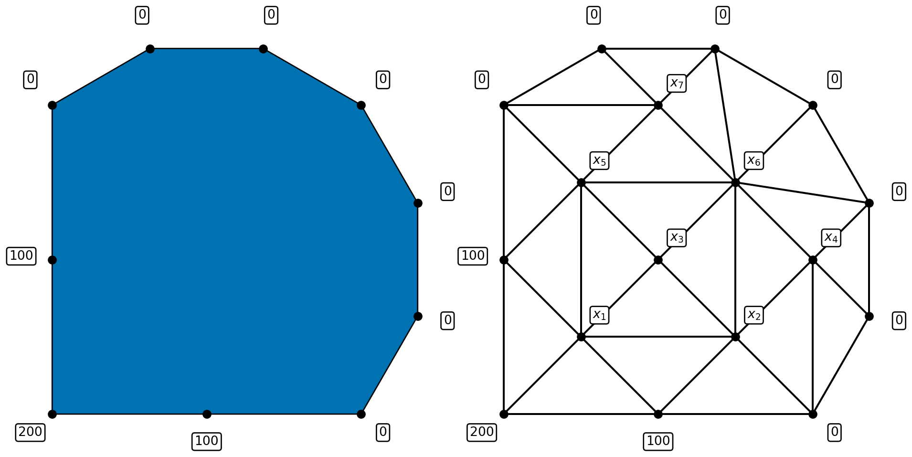
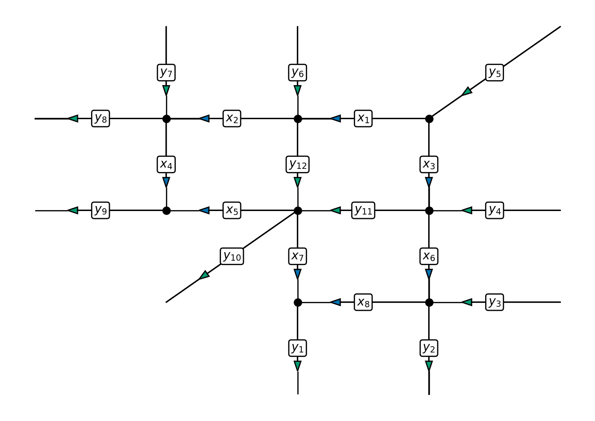

COMP2870 Theoretical Foundations of Computer Science II
Introduction to Linear Algebra
hi
Dr. Thomas Ranner (Tom) T.Ranner@leeds.ac.uk
Teams messages are fine too.
Contents of this submodule
This part of the module will deal with numerical algorithms that involve matrices. The study of this type of problem is called (numerical) linear algebra.
We will approach these problems using a combination of theoretical ideas and practical solutions, thinking through the lens of real-world applications.
As a consequence, to succeed in linear algebra, you will do some programming (using Python) and some pen-and-paper theoretical work, too.
Support for this part of the module
- Weekly labs (1 hour): Mondays or Tuesdays
- Tutorials (1 hour): Mondays or Tuesday
- Maths lunch hour: Wednesday 1-2pm, Bragg GR.25
Later this term, week 11, you will complete a project based on the things you’ve learnt from this section of the module.
Learning outcomes
Candidates should be able to:
- explain practical challenges working with floating-point numbers;
- define and identify what it means for a set of vectors to be a basis, spanning set or linearly independent;
- apply direct and iterative solvers to solve systems of linear equations; implement methods using floating point numbers and investigate computational cost using computer experiments;
- apply and understand algorithms to compute eigenvectors and eigenvalues of large matrices.
Textbooks and other resources
Introduction to Linear Algebra (Fifth Edition), Gilbert Strang, Wellesley-Cambridge Press, 2016. with MIT course material.
Scientific Computing: An Introductory Survey, T.M. Heath, McGraw-Hill, 2002. Some lecture notes based on the book
Engineering Mathematics, K.A. Stroud, Macmillan, 2001. available online
Numerical Recipes in C++/C/FORTRAN: The Art of Scientific Computing, W.H. Press, S.A. Teukolsky, W.T. Vetterling and B.P. Flannery, Cambridge University Press, 2002/1993/1993.
Online notes
I expect minor adjustments to be made to both throughout the progress of delivering the materials.
You can always find the latest versions at:
- https://comp2870-2526.github.io/linear-algebra-notes/ (html version)
- https://comp2870-2526.github.io/linear-algebra-notes/COMP2870-Theoretical-Foundations--Linear-Algebra.pdf (pdf version)
Please either email me (T.Ranner@leeds.ac.uk) or use the github repository to report any corrections.
Programming
We will make extensive use of Python and numpy during this section of the module. It may help you to revise some of your notes from last year on these topics.
We will also be working with floating-point numbers. You will have met the definition of a floating point number last year (COMP1850) - we will see that doing maths with floating-point numbers has real consequences (see first lab!)
Sample problems working with floating point numbers i
Sample problems working with floating point numbers ii
If we add something positive to one do we always get an answer greater than one?
Sample problems working with floating point numbers iii
What can go wrong!?!
In February 1991, a basic rounding error within software for the US Patriot missile system caused it to fail, contributing to the loss of 28 lives.
In June 1996, the European Space Agency’s Ariane Rocket exploded shortly after take-off: the error was due to failing to handle overflow correctly.
In October 2020, a driverless car drove straight into a wall due to faulty handling of a floating-point error.
Here’s the video
Video
Reminder of matrices and vectors
Definition 1 A matrix is a rectangular array of numbers called entries or elements of the matrix. A matrix with \(m\) rows and \(n\) columns is called an \(m \times n\) matrix or \(m\)-by-\(n\) matrix. We may additionally say that the matrix is of order \(m \times n\). If \(m = n\), then we say that the matrix is square.
Vectors
Definition 2 A column vector, often just called a vector, is a matrix with a single column. A matrix with a single row is a row vector. The entries of a vector are called components. A vector with \(n\) rows is called an \(n\)-vector.
Systems of linear equations
Given an \(n \times n\) matrix \(A\) and an \(n\)-vector \(\vec{b}\), find the \(n\)-vector \(\vec{x}\) which satisfies: \[\begin{equation} \label{eq:sle} A \vec{x} = \vec{b}. \end{equation}\]
Fully written out format
We can also write \(\eqref{eq:sle}\) as a system of linear equations: \[\begin{align*} \text{Equation 1:} && a_{11} x_1 + a_{12} x_2 + a_{13} x_3 + \cdots + a_{1n} x_n & = b_1 \\ \text{Equation 2:} && a_{21} x_1 + a_{22} x_2 + a_{23} x_3 + \cdots + a_{2n} x_n & = b_2 \\ \vdots \\ \text{Equation i:} && a_{i1} x_1 + a_{i2} x_2 + a_{i3} x_3 + \cdots + a_{in} x_n & = b_i \\ \vdots \\ \text{Equation n:} && a_{n1} x_1 + a_{n2} x_2 + a_{n3} x_3 + \cdots + a_{nn} x_n & = b_n. \end{align*}\]
Notes
The values \(a_{ij}\) are known as coefficients.
The right hand side values \(b_i\) are known and are given to you as part of the problem.
\(x_1, x_2, x_3, \ldots, x_n\) are not known and are what you need to find to solve the problem.
Key properties of solution algorithms
Typically, these systems are very large (\(n \approx 10^9\)).
It is therefore important that this problem can be solved
- accurately: we are allowed to make small errors but not big errors;
- efficiently: we need to find the answer quickly;
- reliably: we need to know that our algorithm will give us an answer that we are happy with.
Ex. Temperature in a sealed room
Suppose we wish to estimate the temperature distribution inside an object:
Model
The temperature at each interior point is the average of its neighbours.
Ex. Traffic network
Suppose we wish to monitor the flow of traffic in a city centre:

Model
As the above example shows, it is not necessary to monitor every single road. If we know all of the \(y\) values, we can calculate the \(x\) values!
Some bigger examples
Airflow around cars
Gianmarco Mengaldo, Industry-relvant implicit LES via spetal/hp element methods
(Almost) all of machine learning…

Summary
To succeed in linear algebra,
we will have to think theoretically and practically;
we will need to think about floating-point errors;
we will need to think about massive problems (\(n \approx 10^9\))
Our first target problem will be solving systems of linear equations.